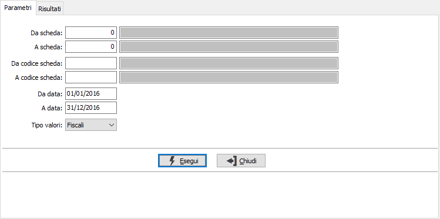
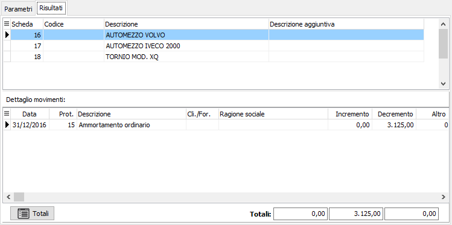
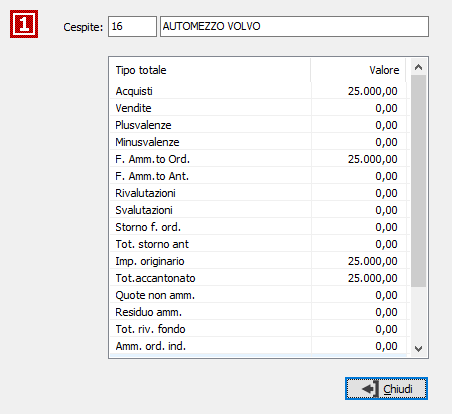
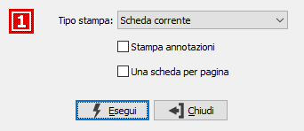

Analisi schede
Il programma permette l’analisi a video e a stampa dei movimenti relativi ad uno o più cespiti, con possibilità di visualizzare i totalizzatori dei cespiti stessi. Possono essere visualizzati i movimenti relativi a più esercizi, in funzione dei parametri di data inseriti.
Il programma si articola su due finestre video. La prima consente di fornire i parametri di selezione.

DA SCHEDA: indica il numero del cespite con cui iniziare la selezione. Sul campo sono attive le funzioni di ricerca (F9). L'utilizzo del numero cespite annulla quello del codice e viceversa.
A SCHEDA: indica il numero del cespite con cui terminare la selezione. Sul campo sono attive le funzioni di ricerca (F9). L'utilizzo del numero cespite annulla quello del codice e viceversa.
DA CODICE SCHEDA: indica il codice del cespite con cui iniziare la selezione. Sul campo sono attive le funzioni di ricerca (F9). L'utilizzo del numero cespite annulla quello del codice e viceversa.
A CODICE SCHEDA: indica il codice del cespite con cui terminare la selezione. Sul campo sono attive le funzioni di ricerca (F9). L'utilizzo del numero cespite annulla quello del codice e viceversa.
DA DATA: inserire la data da cui si desidera iniziare la selezione. Non è consentito lasciare il campo vuoto.
A DATA: inserire la data a cui si desidera terminare la selezione. Non è consentito lasciare il campo vuoto.
TIPO VALORI: il campo è presente solo se attiva la gestione degli ammortamenti fiscali e definisce se stampare i valori fiscali o civilistici.
Forniti i parametri di selezione e confermando tramite pressione del pulsante Esegui, viene visualizzata la finestra video Risultati, articolata su due sezioni video.

Nelle griglia della sezione superiore vengono visualizzati codice e descrizione dei cespiti selezionati. Il cursore si posiziona sul campo scheda del primo rigo, corrispondente al primo cespite selezionato, ed è possibile scorrere i vari cespiti visualizzati tramite freccia giù e freccia su.
Nella griglia della sezione inferiore vengono invece visualizzati i movimenti del cespite attivo, corrispondente a quello contrassegnato dal cursore nella sezione superiore.
Premendo il pulsante Totali, vengono visualizzati i totalizzatori che presentano lo stato complessivo del cespite in esame.

Agendo sul pulsante Stampa oppure Anteprima della tool bar vengono richiesti ulteriori parametri per la stampa dei dati selezionati: è possibile stampare la scheda selezionata o tutte le schede in analisi, stampare le annotazioni e scegliere se stampare una scheda per pagina.
